本文主要介绍了如何入门腾讯云上的TKE(Tencent Kubernetes Engine)服务。
TKE简介
腾讯云容器服务（Tencent Kubernetes Engine，TKE）是高度可扩展的高性能容器管理服务，您可以在托管的云服务器实例集群上轻松运行应用程序。使用该服务，您将无需安装、运维、扩展您的集群管理基础设施，只需进行简单的 API 调用，便可启动和停止 Docker 应用程序，查询集群的完整状态，以及使用各种云服务。您可以根据资源需求和可用性要求在集群中安排容器的置放，满足业务或应用程序的特定要求。
腾讯云容器服务基于原生 Kubernetes 提供以容器为核心的解决方案，解决用户开发、测试及运维过程的环境问题、帮助用户降低成本，提高效率。腾讯云容器服务完全兼容原生 Kubernetes API，并扩展了腾讯云的云硬盘、负载均衡等 Kubernetes 插件，同时以腾讯云私有网络为基础，实现了高可靠、高性能的网络方案。
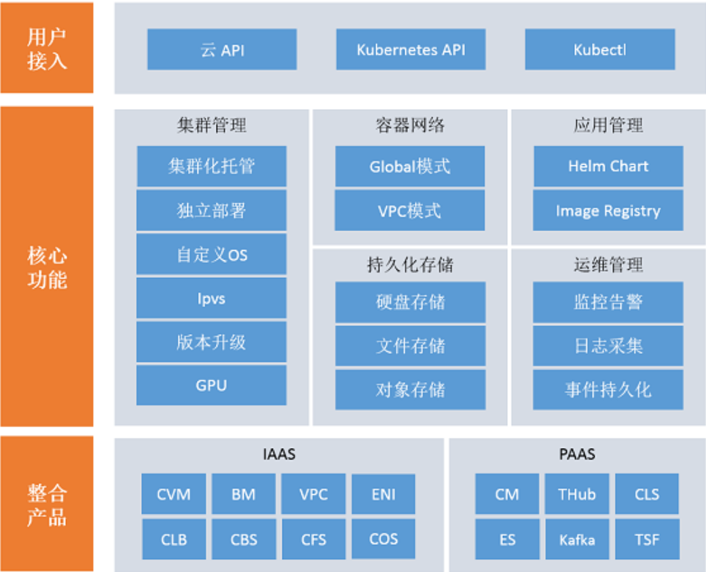
创建镜像仓库并授权连接github和gitlab
镜像仓库概述
镜像仓库用于存放 Docker 镜像，Docker 镜像用于部署容器服务，每个镜像有特定的唯一标识（镜像的 Registry 地址+镜像名称+镜像 Tag）。
镜像类型
目前镜像支持 Docker Hub 官方镜像和用户私有镜像(自己生成的业务镜像和一些订制的镜像)。
授权步骤
将腾讯云docker镜像仓库和Github授权连接，分为以下四步：
1.开通镜像仓库
2.新建命名空间
3.新建镜像仓库
4.源代码授权
腾讯云上开通镜像仓库
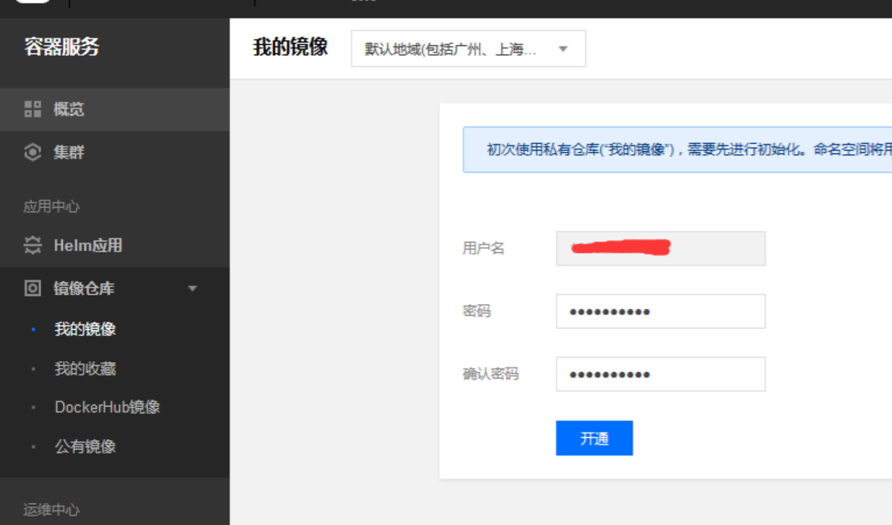
创建命名空间
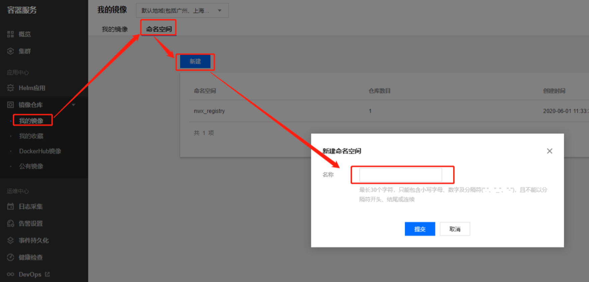
在容器服务中，点击镜像仓库会展开下拉框，点击我的镜像，首次使用镜像仓库的用户，需要先开通镜像仓库，输入用户名和密码。
- 用户名：默认是当前用户的账号，是您登录到腾讯云docker镜像仓库的身份。
- 密码：是您登录到腾讯云docker镜像仓库的凭证。
新建镜像仓库
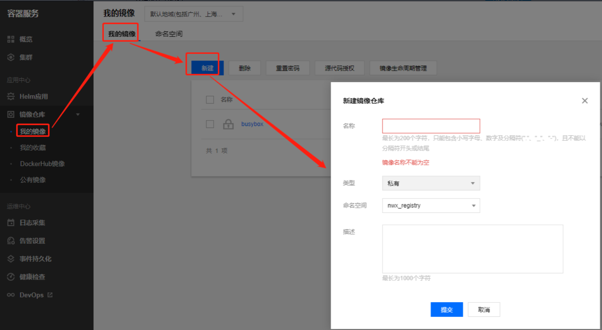
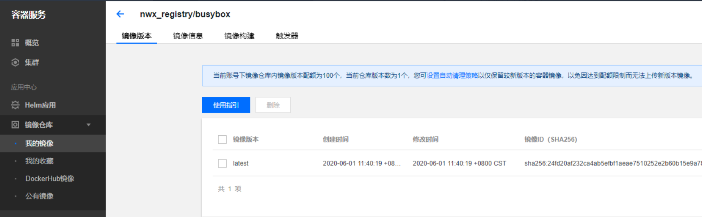
点击我的镜像，点击我的镜像，点击新建，新建镜像仓库，输入名称，类型选择私有，命名空间选择之前新建的liangfeng，描述可自定义填写该仓库的用途。
- 类型：分为公有和私有，即公有镜像仓库和私有镜像仓库。如果你想将自己仓库下的镜像暴露在公网，且其他人都能够访问，则选择公有；如果只用于个人用户访问，则选择私有。
登录仓库上传下载镜像
现在我们举例将busybox的最新镜像上传到仓库并在另外的机器上下载镜像
1 | 登录仓库 |
源代码授权
github上源代码授权
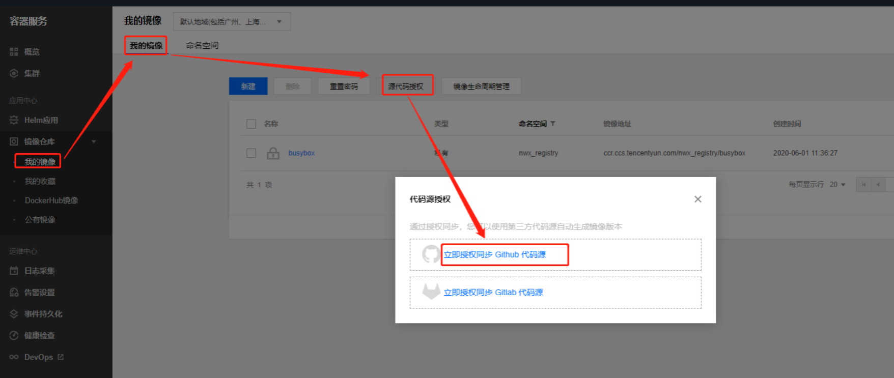
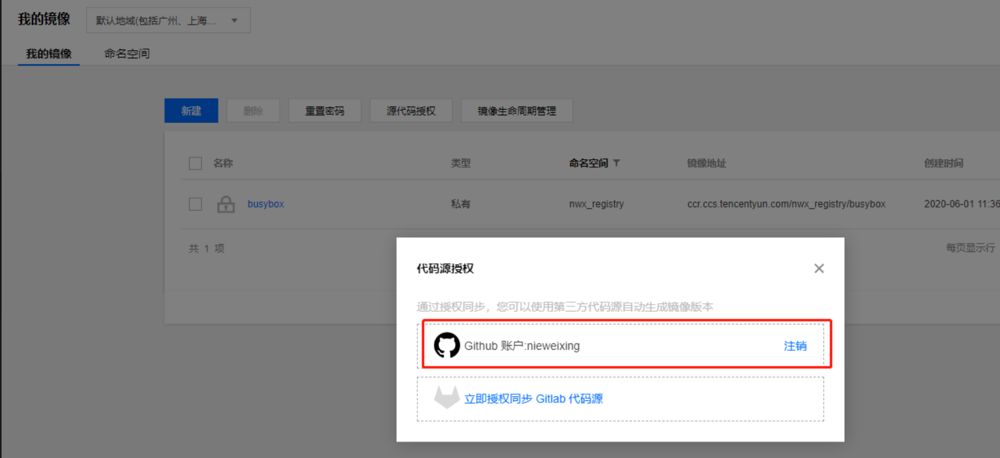
github上源代码授权只需要确认授权，并输入github账户密码登录即可
gitlab上源代码授权
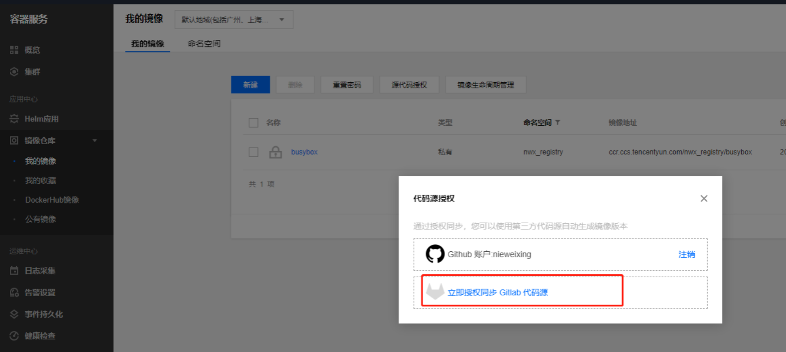
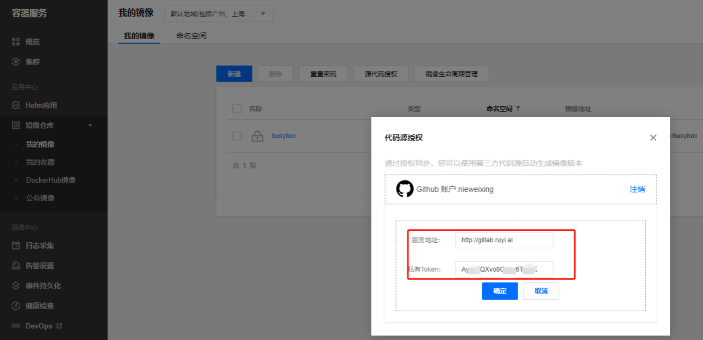
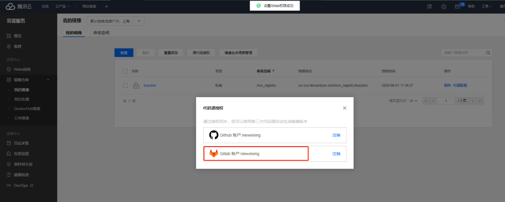
在我的镜像，点击源代码授权，点击立即授权同步 Gitlab代码源。
- 服务地址：Gitlab HTTP或HTTPS地址
- 用户名：登录Gitlab 的用户名。
- 私有Token：连接Gitlab 的Personal Access Token。
至此源授代码完成。
备注：如何新建Gitlab Personal Access Token。
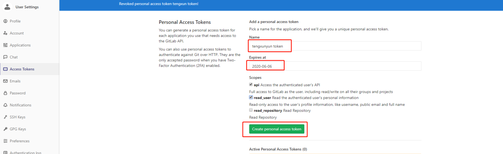
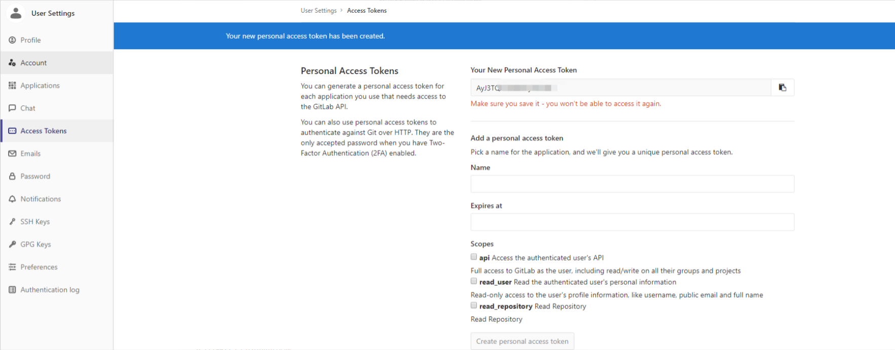
点击右上角个人资料，点击Setting，点击Access Tokens，输入Token Name和过期时间，勾选api和read_user或其他权限，点击Create Personal Access Token。之后可以看到生成的Personal Access Token。
制作nginx和php基础镜像
容器云平台Docker镜像
1.Docker基础镜像：提供基础应用型的Docker软件服务（例如：nginx，php，jdk等），所以dockerhub镜像，公有镜像，自定义私有镜像都可以理解为基础镜像。
2.Docker业务镜像：将Gitlab上的源代码，或通过maven打出来的jar或tar包，添加至基础镜像中，通过构建打包成的Docker业务镜像。
通过commit的方式制作镜像
镜像制作步骤如下
1.安装docker软件（yum install docker或apt-get install docker）
2.下载docker centos镜像(docker pull)
3.创建并进入容器（docker run）
4.nginx docker基础镜像制作
5.将容器提交docker基础镜像（docker commit）
6.php docker基础镜像制作
docker镜像制作
安装docker
1 |
|
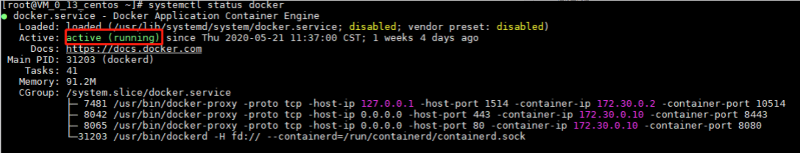
下载docker镜像
1 | [root@VM_0_13_centos ~]# docker pull centos:7.5.1804 |
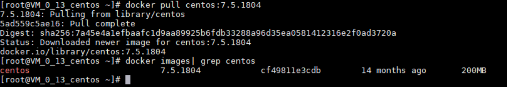
启动容器并进入容器
1 | [root@VM_0_13_centos ~]# docker run -it centos:7.5.1804 /bin/bash |
制作nginx镜像
1 | [root@34c805aa9433 /]# yum install epel-release -y |
1.将user nginx;修改成user root; (容器中nginx 要以root用户运行)
2.添加daemon off; （nginx和php等应用型软件安装在容器里面，必须要已守护进程的方式运行）
3.设置worker_processes参数为auto
4.设置access_log对应的路径为/data/logs/nginx/access.log
配置文件如下
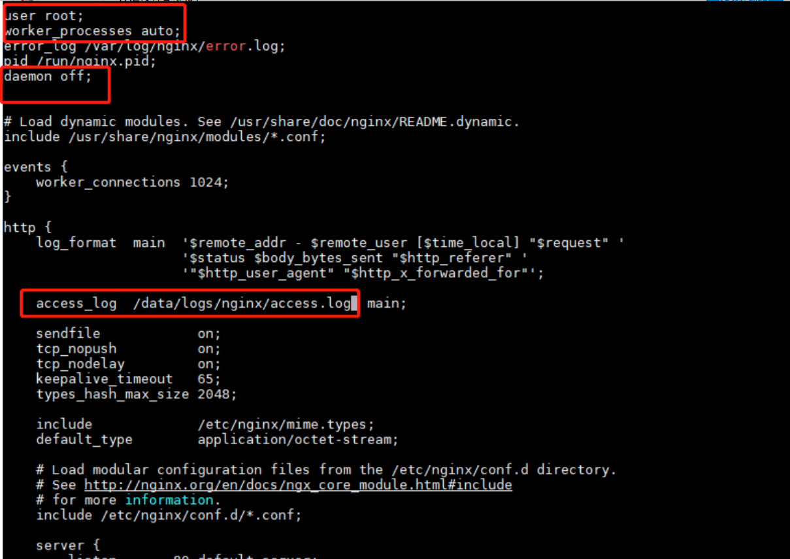
[root@34c805aa9433 nginx]# cat /etc/nginx/conf.d/localhost.conf //日志路径可跟进自身需求设置
添加localhost.conf配置文件
1.设置为nginx 80端口启动
2.server_name为wordpress.tencent.com localhost; （wordpress.tencent.com是wordpress的访问域名，根据业务需求设置）
3.error_log对应路径为/data/logs/nginx/wordpress.tencent.com_error.log
4.wordpress网站根目录是/data/www/wordpress（这个目录暂时不创建，之后会讲解制作Docker业务镜像将源码添加至/data/www/wordpress目录）
5.设置fastcgi_pass unix:/dev/shm/php-fpm.sock; （以nginx和php-fpm 使用uninx socket通信）
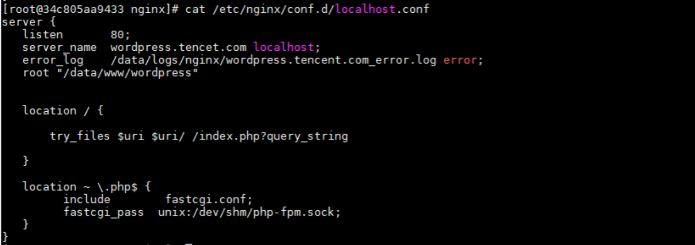
[root@34c805aa9433 nginx]# mkdir /data/logs/nginx -p //创建日志目录
将容器提交为镜像
查看容器id,可以新开窗口或者执行ctrl+p+q（该命令退出容器但是不会关闭容器）
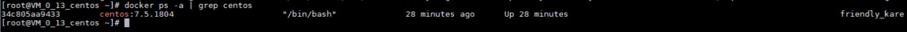
CONTAINER ID是容器ID，IMAGE是使用的镜像，COMMAND是容器启动运行的命令，CREATED是容器创建到运行至今时间，STATUS是容器当前的状态，PORTS是容器运行的端口，NAMES是容器的名称。
1 | [root@VM_0_13_centos ~] |
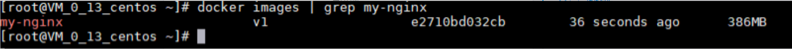
php镜像的制作
1 | 1.首先利用docker run启动一个centos容器 （参考步骤3.3.3） |
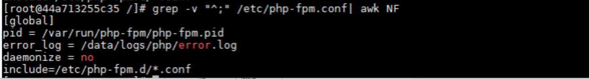
1 | # vi /etc/php-fpm.d/www.conf //日志路径可跟进自身需求设置 |
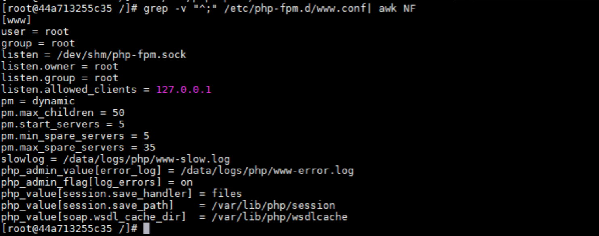
1 | # mkdir /data/logs/php -p //创建php日志目录 |
上传制作的镜像到腾讯云仓库
创建镜像仓库
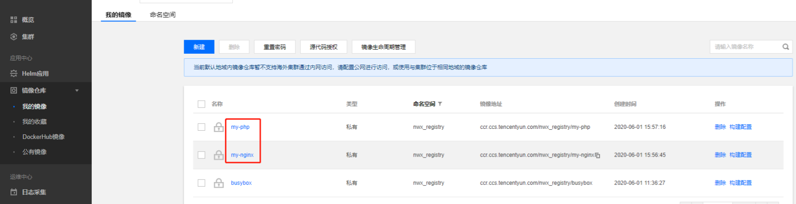
查看指定上传镜像
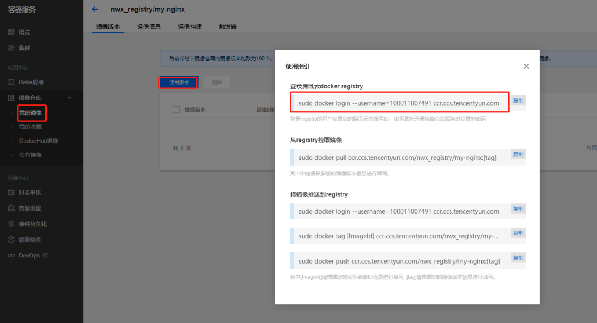
上传镜像
1 | [root@VM_0_13_centos ~]# sudo docker login --username=100011007491 ccr.ccs.tencentyun.com |
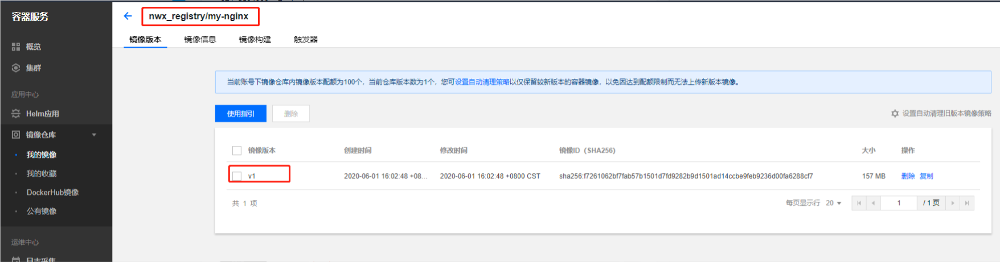
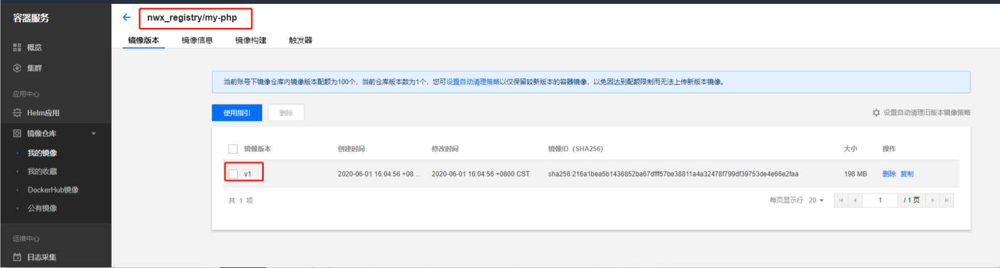
至此，我们已将nginx和php两个docker基础镜像push至腾讯云仓库。
Nginx基础镜像地址：ccr.ccs.tencentyun.com/nwx_registry/my-nginx:v1
PHP基础镜像地址：ccr.ccs.tencentyun.com/nwx_registry/my-php:v1
自动化构建生成springboot业务镜像
腾讯容器云的构建功能（持续集成）
1.将giltab源代码和Dockerfile文件拉取到本地
2.基于Dockefile文件，制作Docker业务镜像（Dockerfile会引用腾讯云镜像仓库中的Docker基础镜像，将源代码添加至基础镜像中，打包成Docker业务镜像）
3.构建又分自动和手动，自动构建：当用户往代码仓库发起push操作时，如果符合自动构建规则，那么就会在腾讯云容器平台上进行容器镜像的自动构建，并将构建出来的容器镜像自动推送到腾讯云容器镜像仓库中。手动构建：用户需要人为手动进行触发构建。
构建（持续集成）步骤：
1.Dockerfile文件上传至github
2.构建配置
3.构建日志内容说明
4.构建镜像验证
Dockerfile上传到github上
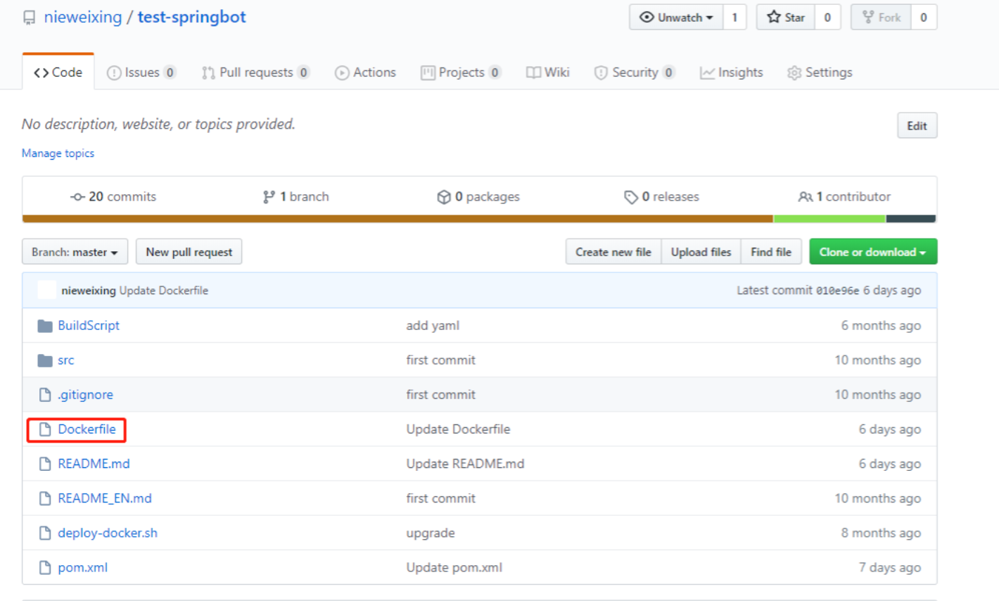
Dockerfile的内容
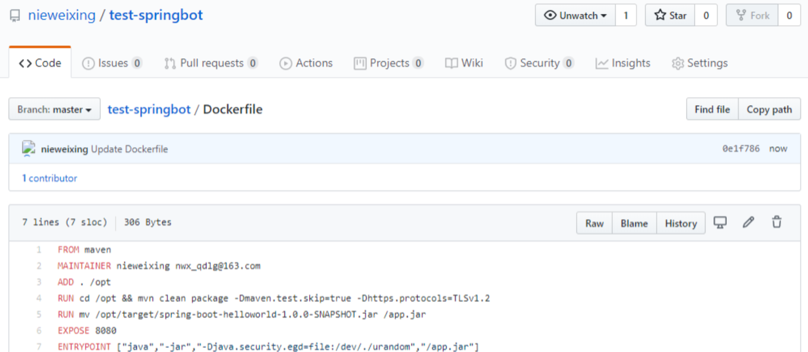
第1行： FROM引用DockerHub上的maven基础镜像
第2行： 通过MAINTAINER 说明作者和作者邮箱地址；
第3行：将代码拷贝到镜像中用于后续打包
第4-5行：执行打包命令，并将jar拷贝到指定目录便于后续运行
第6行：EXPOSE声明服务端口。（容器内的服务端口，这里是springbboot的8080）
第7行：通过ENTRYPOINT设置业务镜像，开机运行springboot服务
说明：开头FROM和MAINTANER必须要指定；容器业务端口必须要用EXPOSE声明；开机自启动必须要用ENTYPOINT；由于Docker镜像是基于”层”，Dockerfile的内容越精简越好。
构建配置
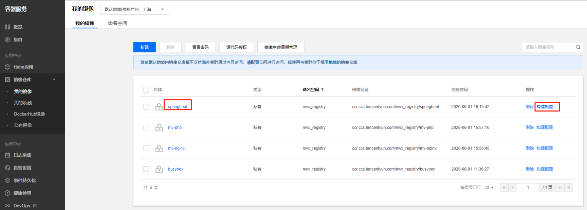
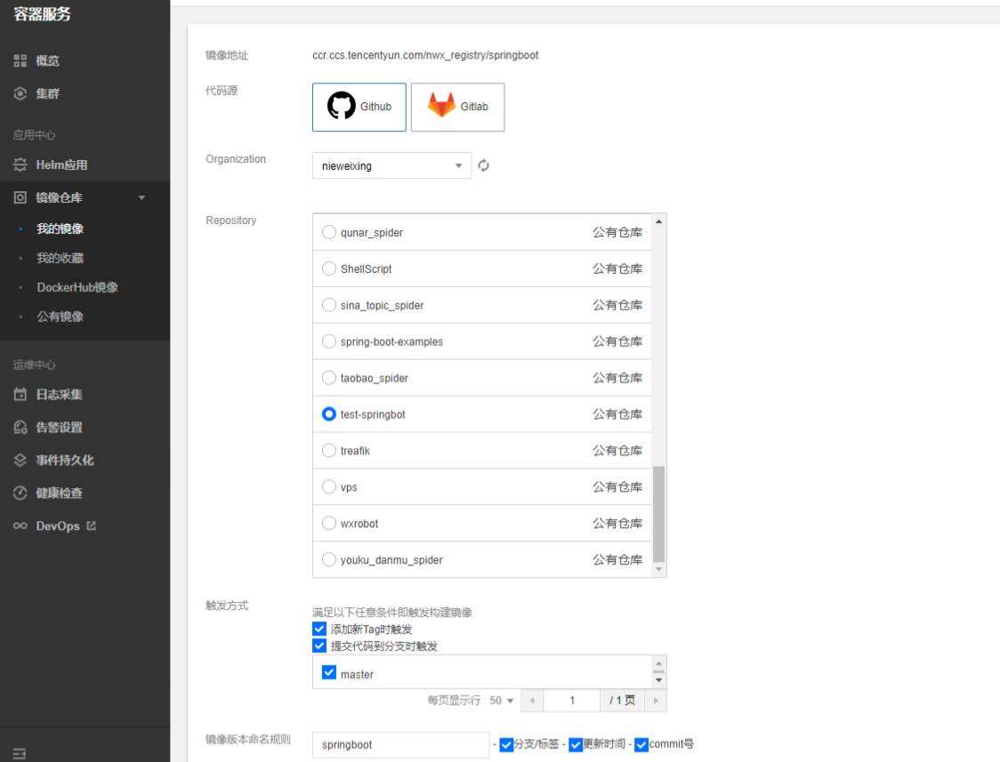
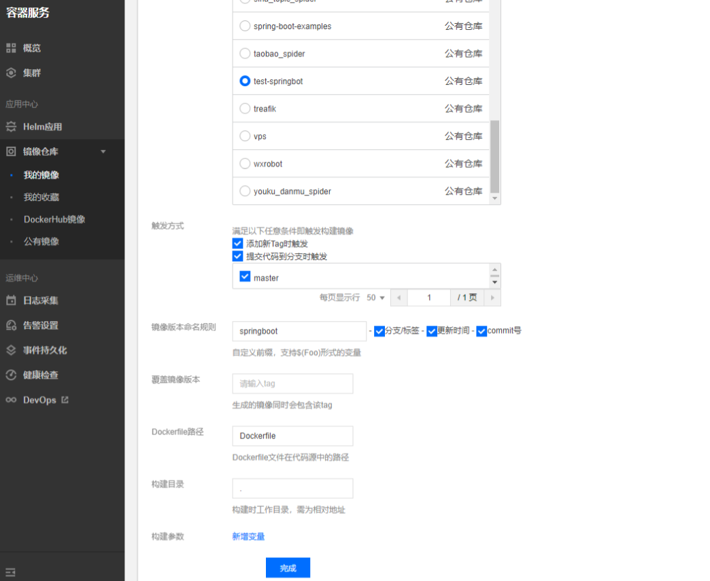
在我的镜像中，点击进入构建配置，填写好构建参数，然后点击完成。
1.代码源选择github，Repository选择test-springboot（github上的项目）
2.触发方式勾选分为：添加新的Tag时触发和提交代码到分支时触发（意思是我们在gitlab上添加tag或进行提交代码操作，容器云平台会自动拉取代码，进行打包构建）
3.镜像版本命名规范自定义填写，分支/标签，更新时间，commit号根据需求勾选。（若都勾选，例如：构建成业务镜像名称是springboot-master-201907261035-1d096112584d036167c1cd50a335c0a58ff43f6a，springboot
是命名规则，master
是gitlab上的分支号，201907261035是生成业务镜像的当前时间，1d096112584d036167c1cd50a335c0a58ff43f6a是每次在github提交后生成的commit号）
4.覆盖镜像版本：生成的镜像同时会包含该tag。（可以理解为镜像别名，多打个tag）
5.Dockerfile路径：Dockerfile在文件源代码中的路径。（根据步骤1中Dockerfile和代码在同级目录，所以直接写Dockerfile即可）
6.构建目录：构建时的工作目录。（我这里填写的”.”,意思是执行当前目录下的Dockerfile文件）
点击完成，会跳转到镜像构建页面
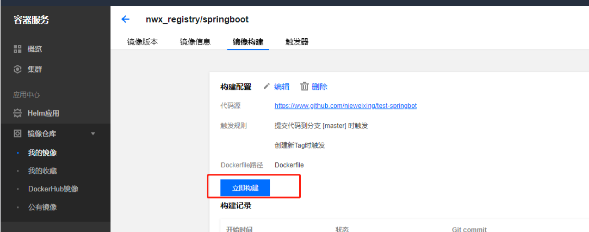
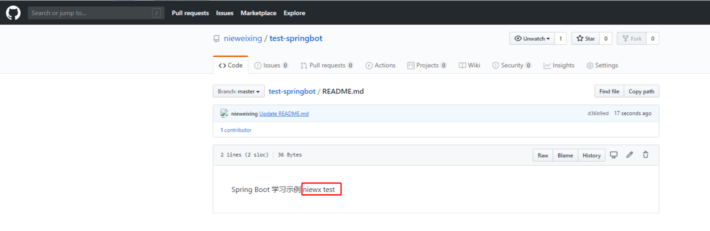
我先在github上提交代码，然后在镜像构建，执行浏览器F5刷新，出现了一条构建记录，点击查看日志，可以看到右侧的构建日志内容
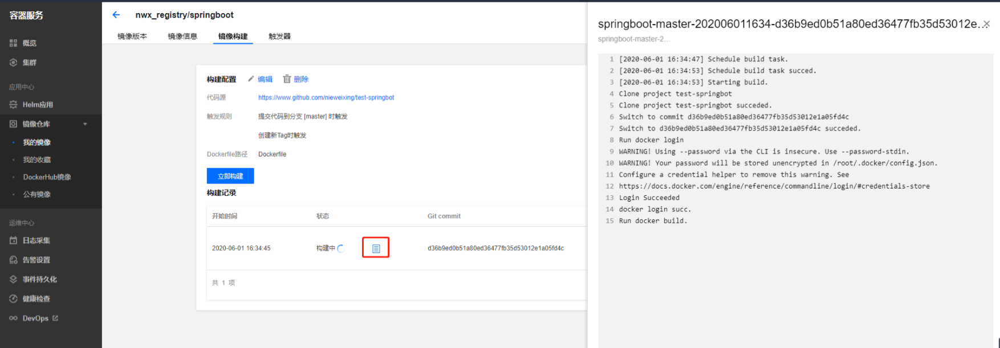
构建日志内容说明
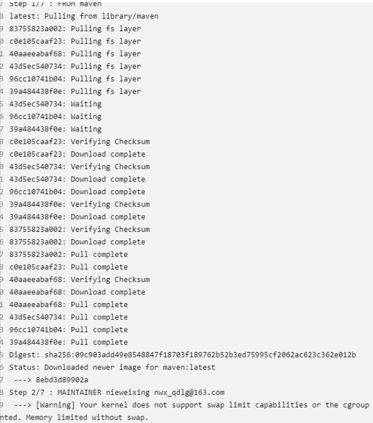
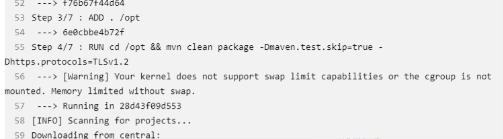
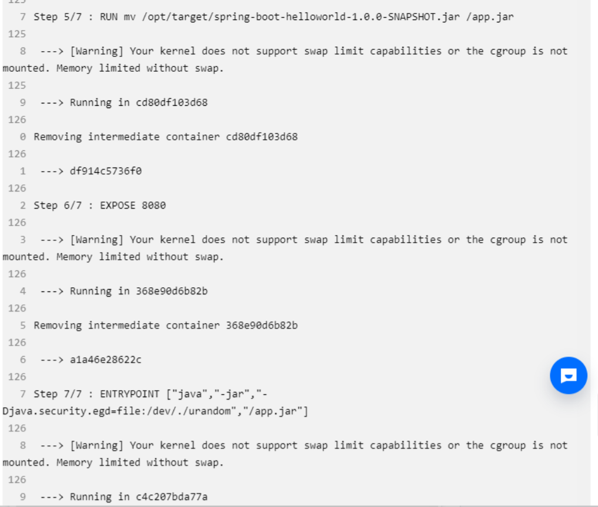
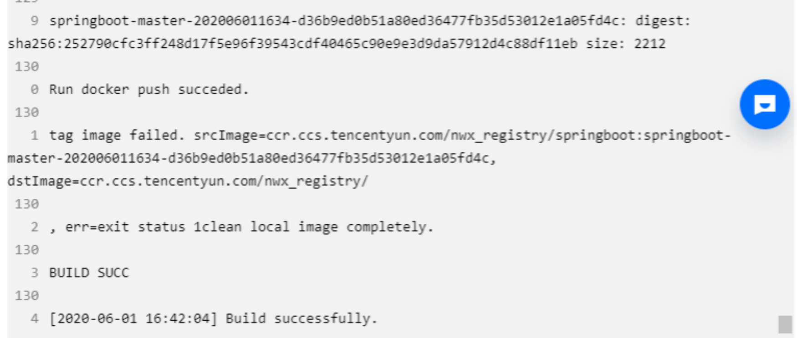
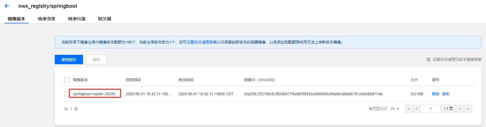
1.可以观察到，图中框选Step 1/6至Step 6/6 都是Dockerfile的文件内容，表示正在执行Dockerfile文件语句。
2.第1304行：表示docker build成功。
3.第1301行：构建成业务镜像的地址是，ccr.ccs.tencentyun.com/nwx_registry/springboot:springboot-master-202006011634-d36b9ed0b51a80ed36477fb35d53012e1a05fd4c
4.第1304行：Build successfully，表示构建成功。
5.到镜像仓库下可以看到镜像已经上传成功
至此springboot业务镜像构建成功，同理，其他镜像构建也可以参照如上步骤
手动构建docker镜像
手动构建方式
1.指定源码分支构建
2.指定commit号构建
3.使用Dockerfile进行构建
指定源码分支构建
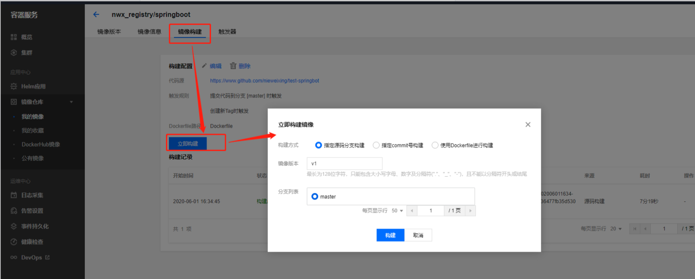
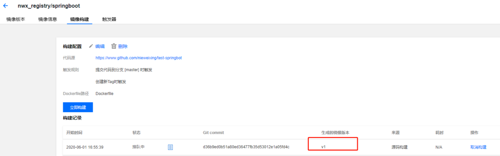
在镜像构建中，点击立即构建，会弹出立即构建镜像界面，构建方式选择指定源码分支构建，镜像版本（可自定义填写，这里我填写v1），分支列表（当前需要构建代码源中的分支，这里我选的master），最后点击构建。在镜像构建中，会多出一条构建记录。
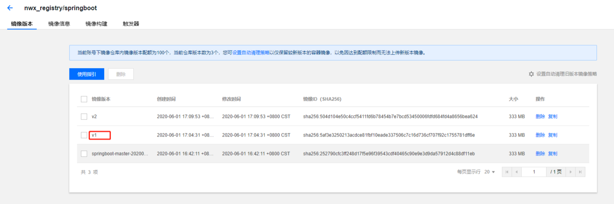
指定commit id构建
获取commit id
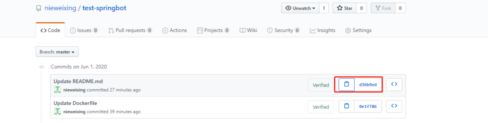
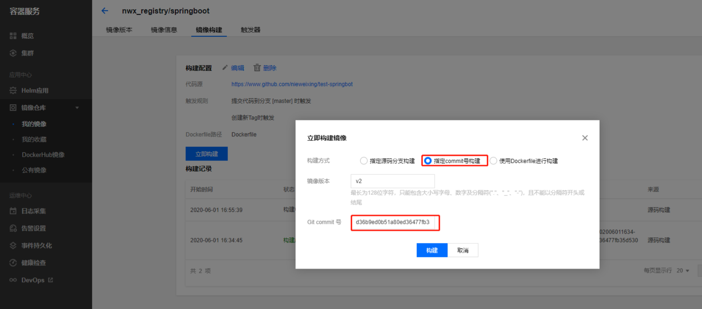
在镜像构建中，点击立即构建，会弹出立即构建镜像界面，构建方式选择指定commit号构建，填写镜像版本(我这里设置的是v2)和Git commit号，最后点击构建。
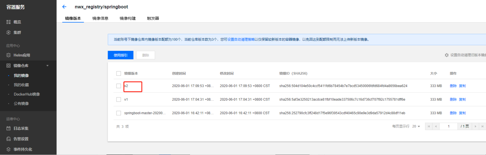
指定Dockerfile构建
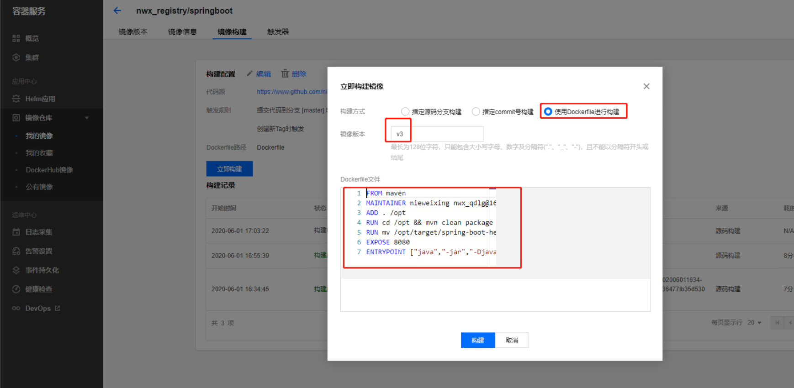
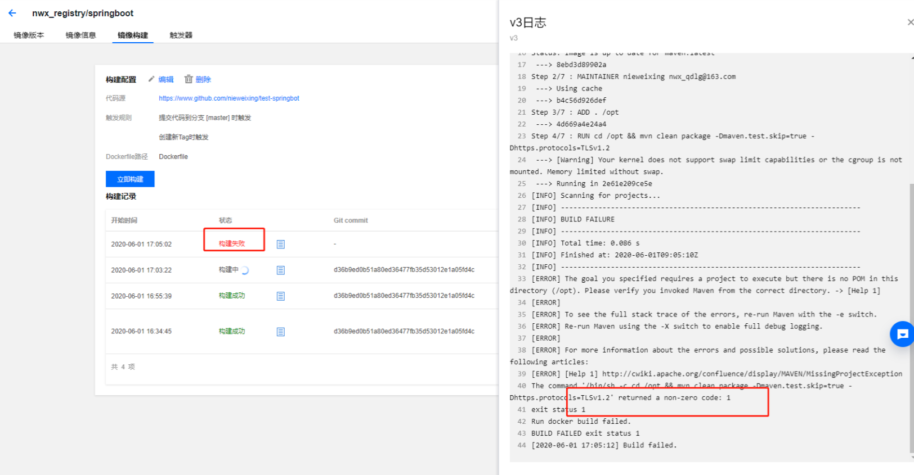
在镜像构建中，点击立即构建，会弹出立即构建镜像界面，构建方式选择使用dockerfile进行构建，填写镜像版本和Dokcerfile文件内容，最后点击构建。 这里的构建来源是dockerfile构建，是获取不到github源码文件，所以没法进行java源码打包，Dockerfile构建是用于自定义dockerfile，可从第三方拉取镜像，自定义docker业务镜像，一般采用Dockerfile的方式构建都是构建一些基础镜像，不设计源代码或者其他本地文件的构建
修改下Dockerfile，让构建时候不涉及文件的拷贝
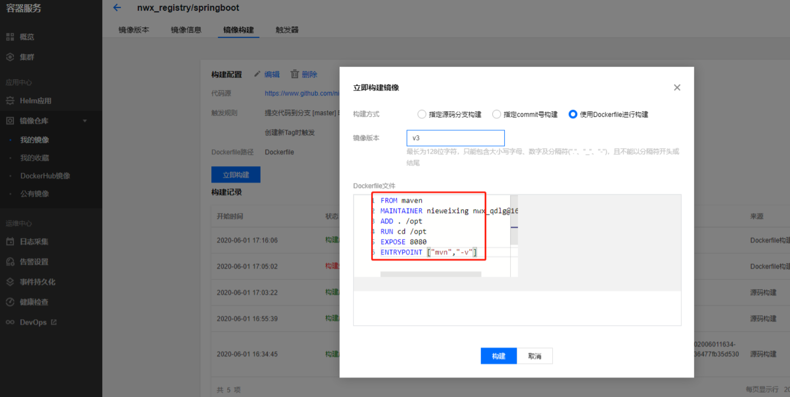
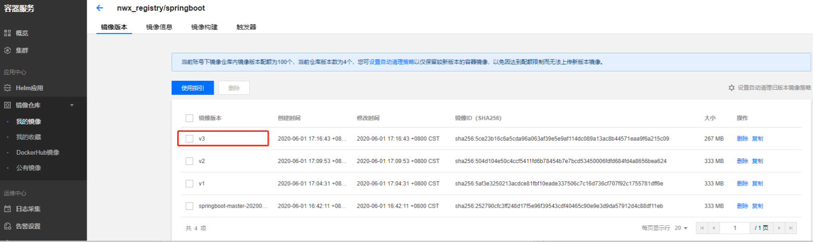

欢迎访问 Vashon 的博客，博客和文章在完善中，请大家耐心等待。 若有问题或者有好的建议欢迎留言，笔者看到之后会及时回复。

...
...